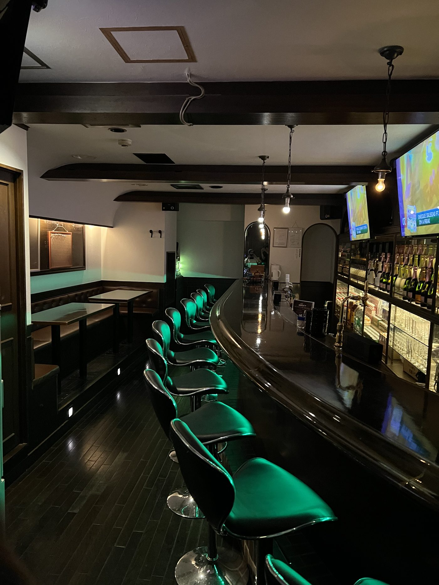
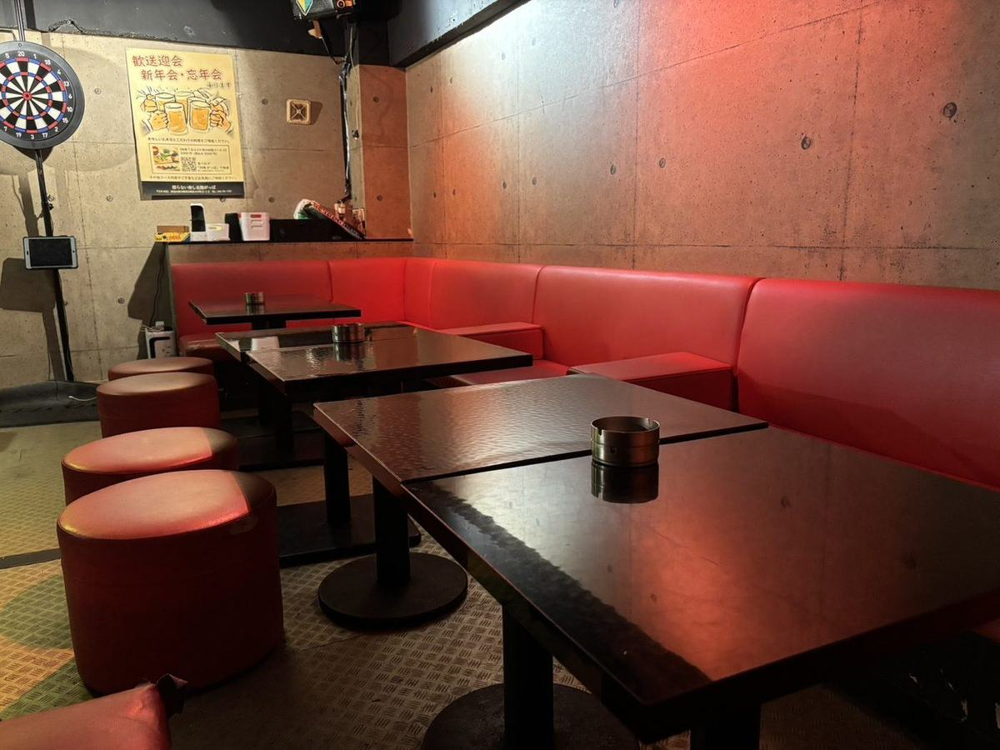
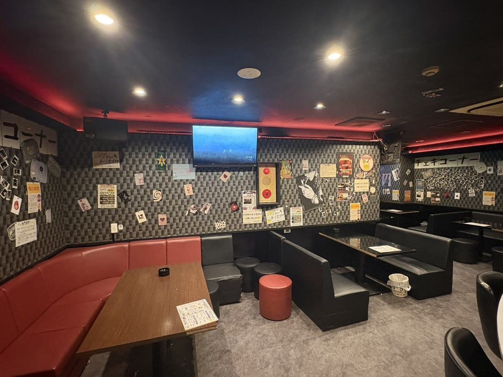

KARAOKE BAR GROUP
蒲田・川崎・大森のカラオケバー
朝まで歌える・飲める4店舗。電話予約・団体/貸切OK。

KAMATA
Bar WAVY 蒲田店
蒲田西口・朝まで歌えるカラオケバー

KAMATA
1000円 Bar 3rd
蒲田駅東口 徒歩1分・1時間1,000円の飲み放題バー

KAWASAKI
Bar A Day 川崎店
川崎駅東口・30分690円から朝まで遊べる懐かしBar
OMORI
Bar NOCT 大森店
大森駅東口・時間無制限3,300円で歌って飲める深夜バー
PARTY
🎉 貸切・パーティーのご案内
最大40名・飲み放題込みで1人1時間 1,500円以下